Q-1: Create one function with zero parameter having a console statement.
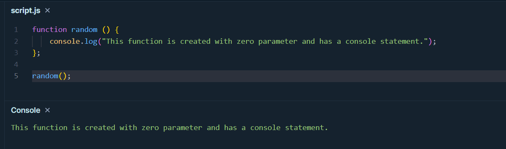Q.2: Create one function which takes two values as a parameter and print the sum of them as "Sum of 3, 4 is 7"
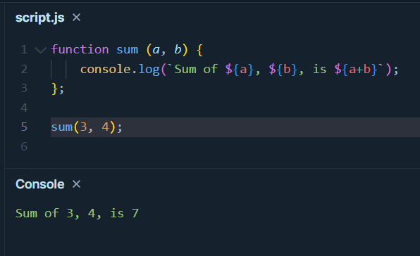Q.3: Create one arrow function
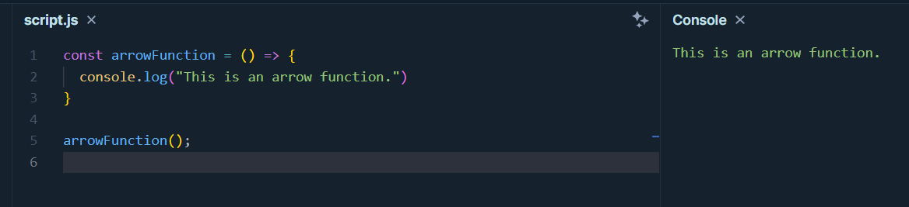Q.4: Print output for the following code.
var x = 21;
var girl = function () {
console.log(x);
var x = 20;
};
girl ();
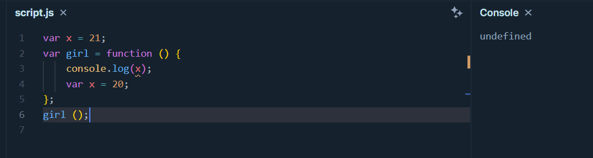
REASON:
The local variable x is hoisted to the top of the function and is initialized as undefined before the console.log(x) statement is executed.
The assignment of x = 20 comes after the console.log(x) statement, so it does not affect the logged value.
Q.5: Print output for the following code.
var x = 21;
girl ();
console.log(x)
function girl() {
console.log(x);
var x = 20;
};
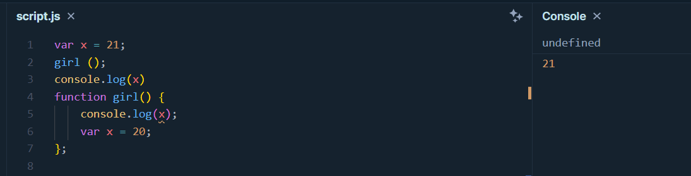
REASON:
The code declares a global variable x with a value of 21,
then calls the girl function. Within girl,
a local variable x is declared with var and is hoisted,
so it logs undefined.
Finally, console.log(x) outside the function logs the global x, which remains 21,
resulting in the output: undefined 21.
Q.6: Print output for the following code.
var x = 21;
a();
b();
function a() {
x = 20;
console.log(x);
};
function b() {
x = 40;
console.log(x);
};
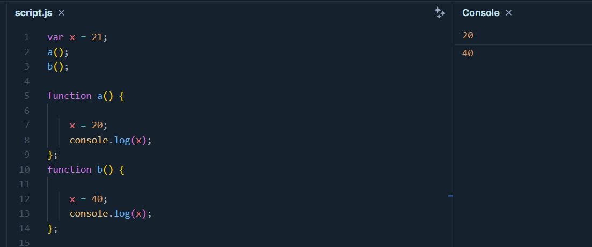
REASON:
Here, the variable x is defined using var keyword, so it will make the variable x as global variable.
In the code in both the functions, before console.log statement, the new value is assigned to the variable x as 20 and 40 respectively.
So the output is 20 and 40.
Q.7: Write a function that accepts parameter n and returns factorial of n.
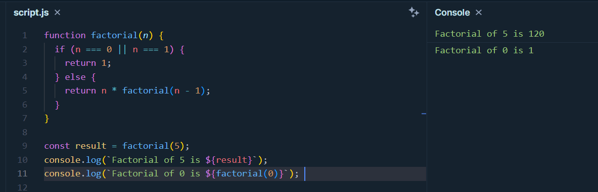
REASON:
This code is for factorial of a number.
In the if condition is used for n=0 and n=1, which results 1.
And else condition for any other numbers,which has a recursive call of function factorial till the input parameter becomes 0.
Finally we have console.log statements to show the output for factorial of and 1 separately.
Day-2 Q.1: Guess the output
function FindSum(a, b){
return a + b;
}
function DisplayData(data, batch){
console.log(`i am from ${data} and My batch is EA${batch}`)
}
DisplayData("PrepBytes", FindSum(10, 9));
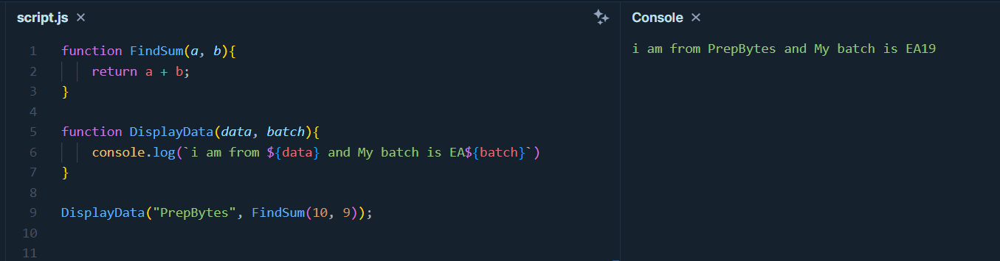
REASON:
here in our code, we have two functions
function FindSum will return te sum of two parameters given in DisplayData function,
where two parameters have been passed one is a string and the FindSum function as parameter
Finally DisplayData function will print "i am from Prepbytes and My batch is EA19"
Day-2 Q.2: Guess the output
Abc();
const Abc = function(){
let value = 20;
console.log(value);
}
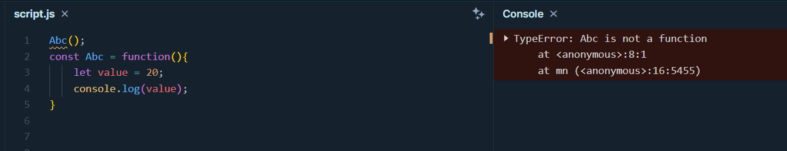
REASON:
This code will give a TypreError: Abc is not a function.
Because function Abc is called before it is defied.
Day-2 Q.3: Guess the output
var a = 10;
(function (){
console.log(a);
var a = 20;
})();
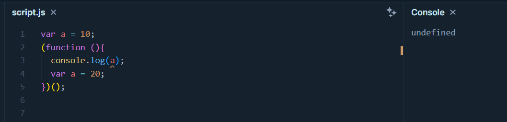
REASON:
This is because the local variable a within the IIFE is hoisted to the top of the
function and initialized as undefined before the console.log(a) statement is executed.
The assignment of a = 20 comes after the console.log(a) statement,
so it does not affect the logged value.
Day-2 Q.4: Guess the output
const greet = function(name){
return function(m){
console.log(`Hi!! ${name}, ${m}`);
}
}
const greet_message = greet('EA19');
greet_message(""Welcome To PrepBytes"");
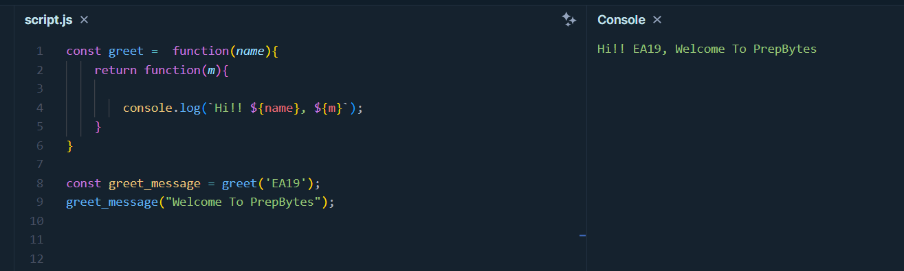
REASON:
The code defines a function greet that accepts a name parameter and returns an inner function.
When greet_message is created with the argument 'EA19',
it effectively "captures" this value.
Later, invoking greet_message("Welcome To PrepBytes") executes the inner function,
using the previously captured name ('EA19') along with the provided message ("Welcome To PrepBytes").
This results in a personalized greeting message that is Hi!! EA19, Welcome to Prepbytes.